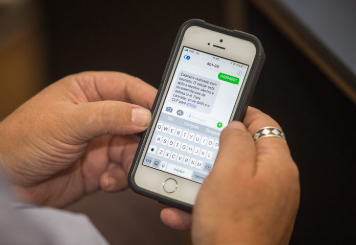
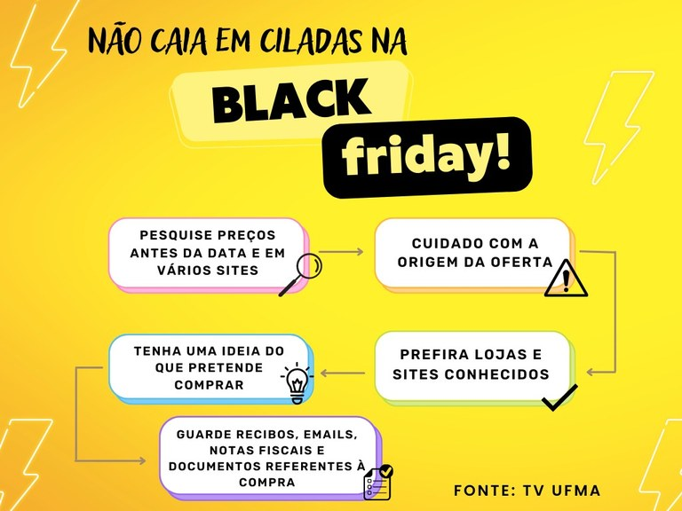
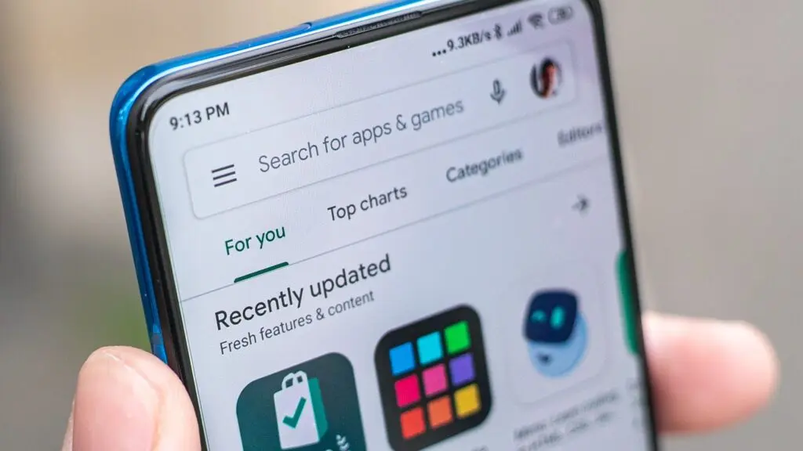
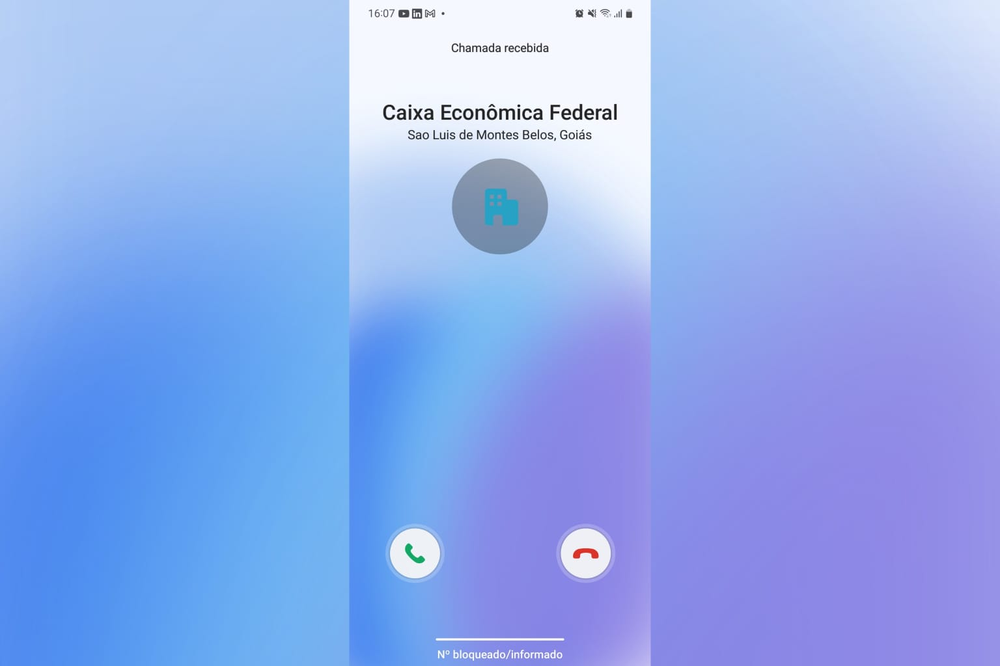

Os golpes digitais vitimaram 24% dos brasileiros com mais de 16 anos nos últimos 12 meses. São mais de 40,85 milhões de pessoas que perderam dinheiro em função de algum crime cibernético, como clonagem de cartão, fraude na internet ou invasão de contas bancárias. Os dados são de uma pesquisa divulgada nesta terça-feira (1º) pelo Instituto DataSenado.
Dicas para não ser mais uma vítima:
Golpe do sorteio:
A vítima recebe um link para um site falso que pode envolver uma promoção, sorteios ou prêmios (ex.: “Clique aqui para ganhar um cupom de desconto”). Nesse site, pode ser instalado um aplicativo espião, ou os golpistas pedem que você confirme um código SMS que, na verdade, é usado para ter acesso ao seu WhatsApp e cloná-lo. Uma vez clonado, eles enviam mensagens para os contatos da vítima, pedindo dinheiro ou se passando por ela para obter informações confidenciais. 
Golpe da super promocão em redes sociais:
Um golpe que se tornou muito comum envolve golpistas que criam anúncios de produtos em "super promoção". Ao clicar nesses anúncios, o usuário é redirecionado para um site clonado de alguma loja conhecida, o que passa credibilidade e facilita o engano. O objetivo é roubar informações pessoais e financeiras. Em alguns casos, o link também instala um malware no dispositivo, permitindo acesso remoto ao aparelho. 
Como evitar esse tipo de golpe:
Prefira realizar compras online pelos aplicativos oficiais das lojas, disponíveis na Play Store ou App Store. Sempre verifique a URL do site que está acessando, desconfie de "super promoções" e evite clicar em links suspeitos. 
Desconfie de ligações de banco ou mensagem:
O golpista liga para a vítima, se passando por um funcionário do banco, e afirma que uma compra de valor alto foi efetuada no cartão dela. Em seguida, solicita que a vítima confirme a essa "compra". Quando a vítima diz que não reconhece a transação, o golpista pede os dados pessoais para "cancelar a compra". Com isso, rouba os dados da vítima e clona a conta do banco. O que fazer ao cair nesse golpe?
Comunique-se com o banco imediatamente:
1. Bloqueie cartões e contas comprometidas.
2. Informe sobre as transações suspeitas.
3. Registre um boletim de ocorrência: Isso pode ser necessário para contestar as transações.
4. Monitore suas contas: Fique atento a movimentações ou tentativas de novos golpes.
5. Altere suas senhas: Troque senhas de aplicativos bancários e outras plataformas relacionadas.